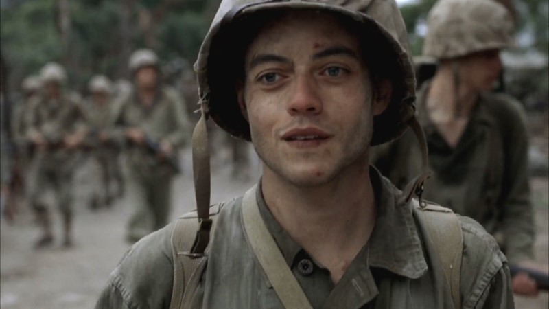
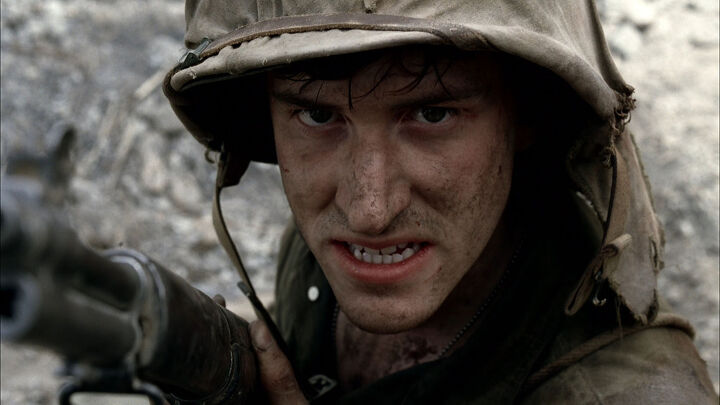

Cpl. Merriell "Snafu" Shelton
Pfc. Merriell “Snafu” Shelton got his nickname from his overly confident attitude, and his scrappy fearlessness during battle.

Pfc. Eugene Sledge
Eugene B. Sledge was born in Mobile, Alabama on November 4, 1923. He was raised by his parents, Edward and Mary, and had an older brother, Edward, Jr., who eventually became a lieutenant in the Army.

R.V. Burgin
Romus Valton "R.V." Burgin was born on August 13, 1921 in Jewett, Texas.